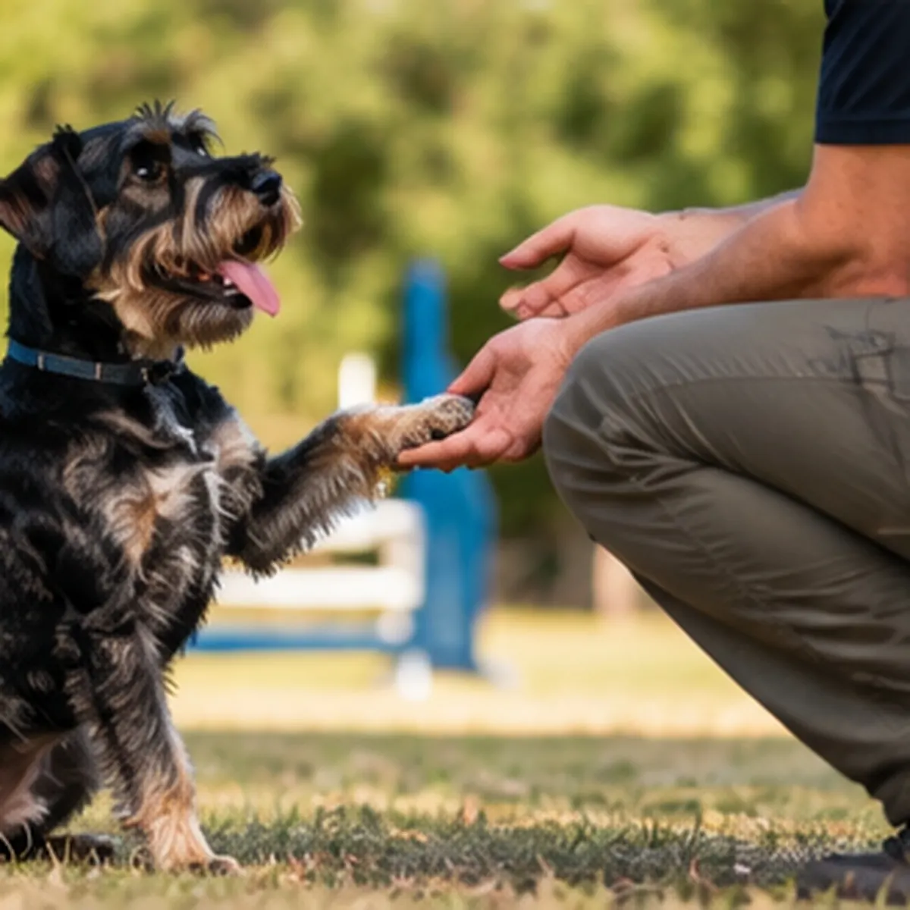
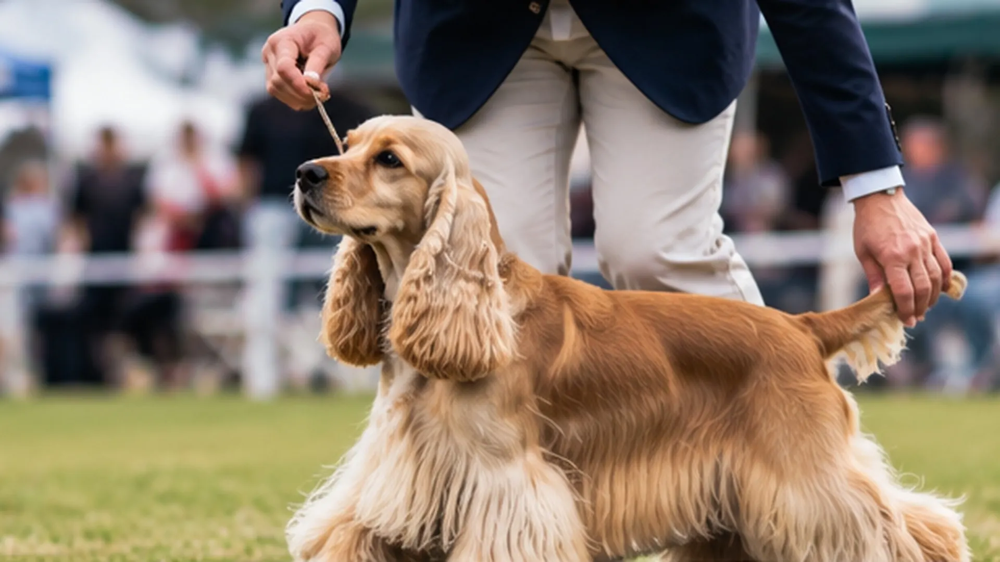
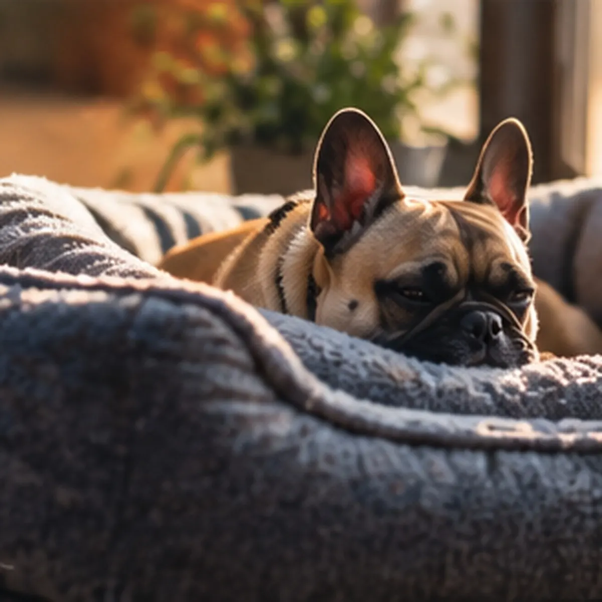
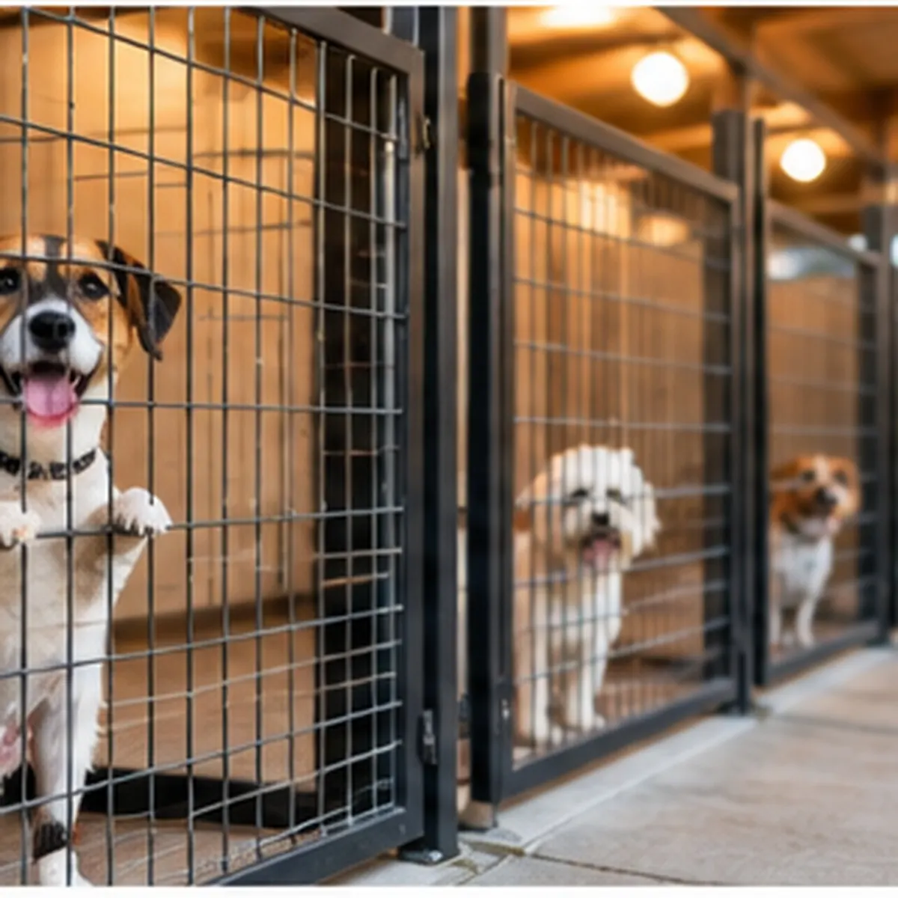
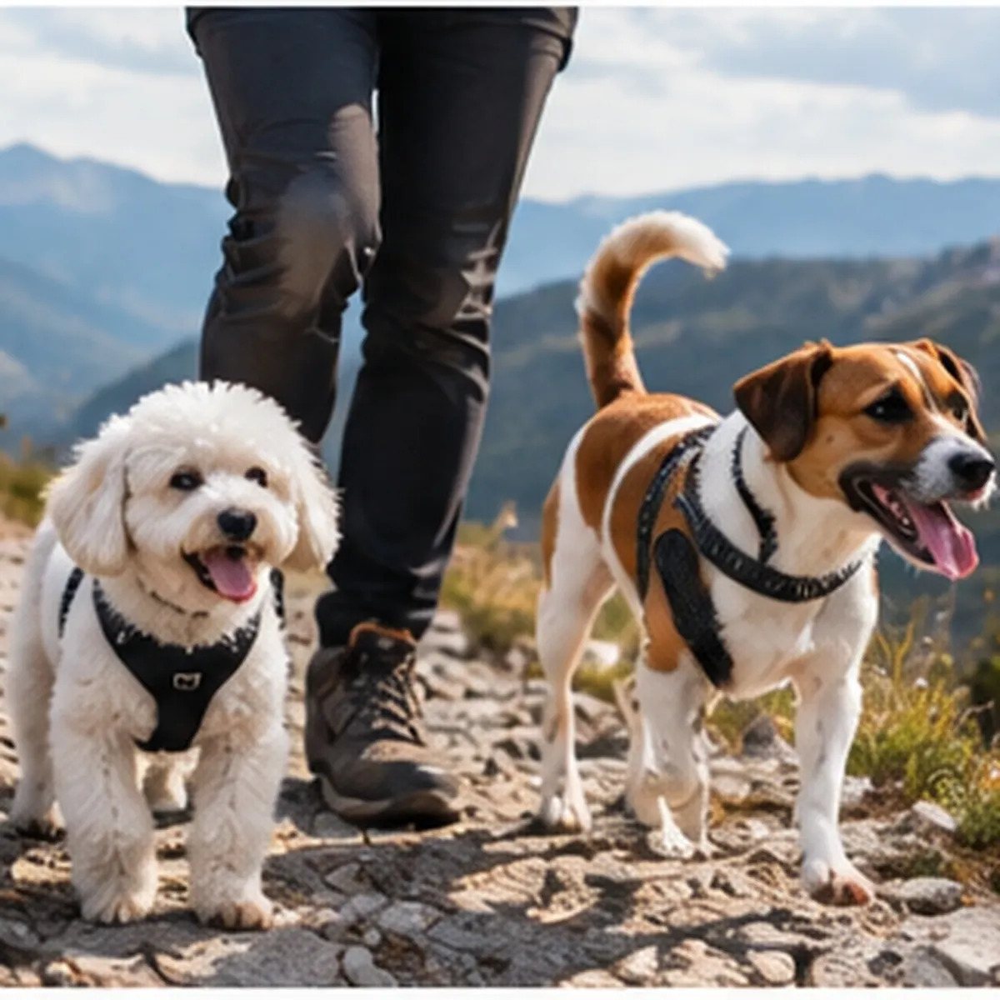

01 / EDUCACIÓN
Adiestramiento y educación canina
Hablemos de la convivencia, los hábitos y lo que querés trabajar con tu perro.
Consultar servicio ↗ADIESTRAMIENTO · HANDLING · GUARDERÍA
Trabajo con perros chicos y medianos en educación, exposiciones y guardería. Antes de avanzar, me gusta conversar con vos y entender lo que necesita tu perro.

GUARDERÍA CANINA
Completá los datos para preparar el mensaje. La solicitud llega por WhatsApp; después hablamos sobre tu perro y confirmamos si hay lugar.

EN QUÉ PUEDO ACOMPAÑARTE
Cada consulta empieza con una conversación para entender el caso y organizar los próximos pasos.

Hablemos de la convivencia, los hábitos y lo que querés trabajar con tu perro.
Consultar servicio ↗Preparación y presentación de perros para exposiciones, con atención a cada ejemplar.
Consultar servicio ↗
Si viajás, contame las fechas y los datos de tu perro. Conversamos antes de confirmar.
Solicitar fechas ↗MI FORMA DE TRABAJAR
Por eso prefiero hablar con cada familia: saber qué necesita, explicar cómo trabajo y acordar juntos el camino más adecuado.

Trayectoria en el trabajo con perrosSOBRE MÍ
Me dedico al adiestramiento y soy handler profesional de perros de exposición. También llevo adelante una guardería canina y fui criador con registro en la F.C.A.
Las imágenes reúnen distintos momentos y trabajos de mi trayectoria. Mi propuesta hoy se enfoca en perros chicos y medianos y en el trato directo con cada persona.
Ver InstagramMOMENTOS DE TRABAJO
Educación, exposiciones, paseos y descanso: una mirada a diferentes momentos con perros.
ANTES DE ESCRIBIRME
No. Primero conversamos sobre tu perro y las fechas; después confirmamos la disponibilidad.
Trabajo con perros chicos y medianos.
Escribime por WhatsApp. Prefiero hablar de tu perro y de lo que necesitás antes de acordar cómo trabajar.
CONTACTO Y UBICACIÓN
Para conocer la ubicación y coordinar una visita, escribime por WhatsApp. También podés consultarme por adiestramiento, exposiciones o guardería.